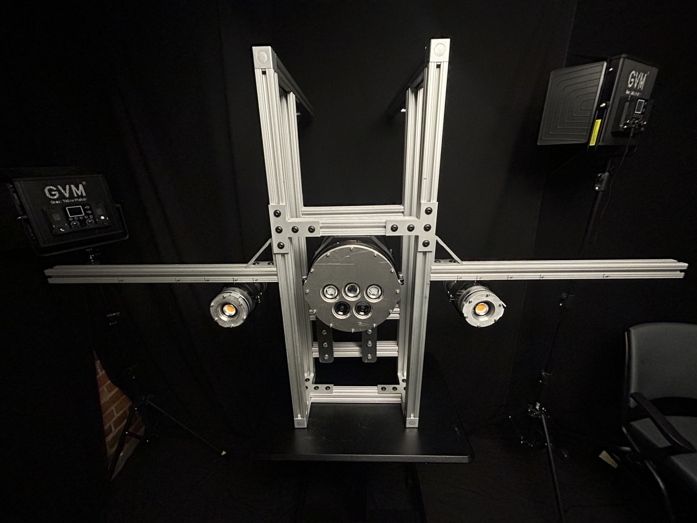
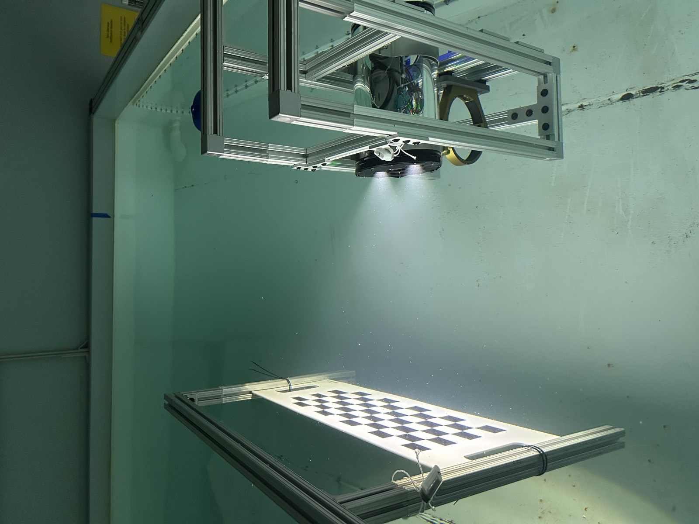

Underwater Biomass Estimation Camera
ML-powered subsea camera that gives aquaculture operators real-time fish biomass.

Background
Fish farms feed by estimate. If the estimate is off, feed is wasted or fish are underfed, and harvest planning suffers. The BMC V2 is a subsea camera system that uses ML to estimate biomass in real time, so operators can feed and plan against measured weight rather than guesses.
What I did
I was the mechanical lead on a 20+ person team, so the physical side of the product was mine:
- Electronics packaging architecture for the camera and light housings.
- Thermal management for continuous subsea operation.
- Sub-millimeter tolerance stack-ups for the optical components.
- Design analysis, product testing, and validation.


How it went
The system launched to production in 2026 and is running at $2.5M ARR. Operators get biomass numbers without pulling fish, which reduces feed cost and makes harvest timing a data decision.
Mechanical DesignElectronics PackagingThermal ManagementPressure Vessel DesignProject Management